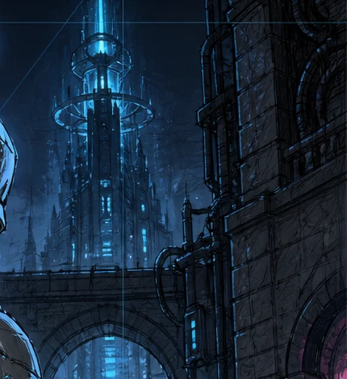

2D剣戟アクションRPG
記憶を失った旅人と、
機械の遺構が残る世界へ。
華麗な剣技で道を切り開く、2D剣戟アクションRPG。
開発中の戦闘プロトタイプを、Windowsで遊べます。
PLAYTEST
まずは一戦、
剣の手応えを。
移動・ジャンプ・ダッシュ・2段攻撃・パリィ・反撃を試せる、開発中の戦闘プロトタイプです。公開版の内容と変更点は更新履歴にまとめています。
最新の公開版をダウンロードWindows 10 / 11・64bit ／ ZIP形式
公開日と変更内容は更新履歴をご覧ください。
更新履歴・既知の問題遊びはじめるまで
- ダウンロードしたZIPを「すべて展開」する。
- フォルダ内の
TechnicalSwordAction.exeを起動する。 - 画面をクリックし、右上の敵を出すボタンで戦闘を始める。
- 移動
- A / D
- ジャンプ
- Space
- 攻撃・反撃
- J ／ 左クリック
- パリィ
- K ／ 右クリック
- ダッシュ
- Shift
Xbox互換ゲームパッドにも対応しています。詳しい操作方法は同梱のREADME.txtをご覧ください。
01 COMBAT
パリィから、
電撃の一撃へ。
攻撃が当たる瞬間に弾くと、敵がよろめきます。その隙に背後へ回り込み、電撃キックで敵を吹き飛ばす。攻防がつながる瞬間を、ドット絵のアニメーションで描きます。
-
見切る
姿勢や動きから、次の攻撃と間合いを読む。
-
弾く・かわす
タイミングを合わせてパリィ。攻撃に応じてダッシュやジャンプでかわす。
-
隙を突く
敵が立て直す前に踏み込み、反撃を決める。

02 WORLD
大戦の跡を、
剣と旅する。
機械技術が引き起こした大戦から数十年。記憶を失った旅人が手にしたのは、言葉を交わせる一本の剣。
古い街や機械の遺構を巡り、出会った人々や剣との会話から、世界と旅人自身の過去が少しずつ見えてきます。
- ジャンル
- 2D剣戟アクションRPG
- 開発中の試遊版
- Windows PC
- ゲームエンジン
- Unity